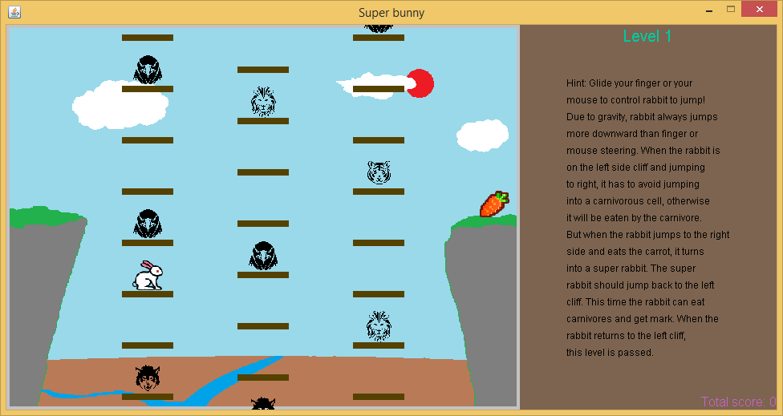

超级小白兔游戏，是一只小白兔从一侧悬崖通过若干部电梯跳到另外一侧悬崖。每部电梯都是一串单元房间。在一些单元房间中间有捕食的野兽，比如鹰啊老虎之类的。当小白兔从左侧悬崖跳往右侧悬崖时，它只能在没有野兽的房间中短暂停留，否则它就会被野兽吃掉。不仅如此，如果小白兔落下的位置正好卡在两个单元房间之间，或者小白兔在一个单元房间停留太久以至于那间单元房跟随电梯移出了允许小白兔跳动的空间，玩家就失败了。
当小白兔到达另一侧时，它就会变成超级小白兔。这时，它可以跳入捕食者的房间吃掉捕食者。当它跳回原来出发的那一侧悬崖，玩家就通过了这一关可以进入下一关了。
超级小白兔游戏在逻辑上比贪吃蛇游戏和销宝石游戏要复杂。但是，和另外两个游戏一样，超级小白兔游戏也通过使用缓存图像的办法最小化了直接在屏幕上绘画的次数。所以，这个游戏实际运行很流畅，甚至比销宝石游戏还要流畅。
游戏的代码和辅助文件已经和其他示例游戏一起被打包。请点击此处下载压缩包。解压缩之后将game_examples目录拷贝到和JMFPLang.jar文件同一个目录的scripts文件夹中，如下图所示。

游戏的源代码文件，也就是super_bunny.mfps位于game_examples目录的supper_bunny子文件夹。它的辅助文件也在该文件夹中。要运行游戏，只需启动JMFPLang.jar程序然后在命令提示行中运行gdi_test::game_test::super_bunny::run()。玩家也可以转到JMFPLang.jar的所在目录，然后再Windows命令提示符或者Powershell窗口中，或者Linux的Bash提示符中输入java -jar JMFPLang.jar -f scripts\game_examples\super_bunny\super_bunny.mfps然后运行。
借助MFP语言对Android和安装有JAVA的PC平台的双重支持，本游戏既可以在安装有JAVA的PC上运行，也可以在安卓设备上以应用或者独立脚本的方式运行。以下是该游戏在两个不同的平台上运行的截屏。上面的屏幕截屏是在Windows+JVM平台上的运行效果，下面的屏幕截屏是在Android平台上的运行效果。
